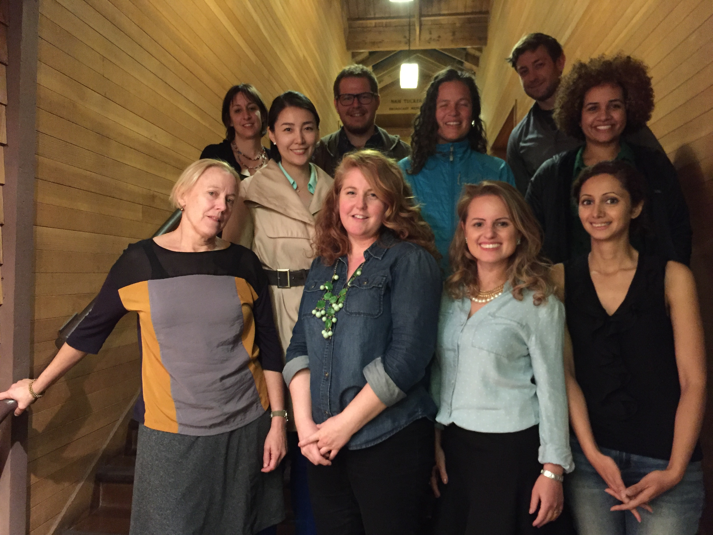

Urban Adamah
The first film I edited.
Urban Adamah is the urban farm in Berkeley CA which shares it's veggies for free with neighbors who can't have enough food.
Food Desert
Consumer choices about food spending and diet are likely to be influenced by the accessibility and affordability of food retailers—travel time to shopping, availability of healthy foods, and food prices. Some people and places, especially those with low income, may face greater barriers in accessing healthy and affordable food retailers, which may negatively affect diet and food security.

Advanced Media Institute of UC Berkeley
NO limit to Learn
It was not easy to learn how to make our own webpages with the videos and statistics which made by ourselves, however, it was one of the most memorable experiences in my life.

The Best Street Food
'Tteokppokki'
This is the most popular street vender food in Korea.